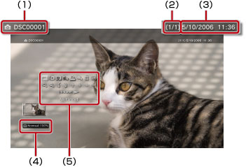

Kuvat > Ohjauspaneelin käyttäminen
Ohjauspaneelin käyttäminen
Näytössä näkyvän ohjauspaneelin avulla voit suorittaa monia toimintoja. Ohjauspaneelin voi tuoda näkyviin tai poistaa näkyvistä painamalla  -näppäintä.
-näppäintä.
Näyttömoodi

Muuta näytössä näkyvän kuvan kokoa.
| Normaali | Sovita kuva näyttöön muuttamatta sen mittasuhteita. |
|---|---|
| Suurennos | Sovita kuva koko näyttöön muuttamatta sen mittasuhteita. Kuvan ylimmäiset ja alimmaiset tai oikean- ja vasemmanpuoleiset osat jäävät näytön ulkopuolelle. |
Vihje
Näyttötilan vaihtaminen ei ole mahdollista kaikkien kuvatiedostojen kanssa.
Vaihtoefekti
Vaihda kuvan vaihtotapaa.
| Normaali | Jos valitset tämän, näkyvä kuva korvataan seuraavalla kuvalla. |
|---|---|
| Dia | Jos valitset tämän, näkyvä kuva korvataan seuraavalla kuvalla diaesitysmuodossa. |
| Häivytys | Ota käyttöön häivytysefekti, jota käytetään siirryttäessä kuvasta toiseen. |
Rajaus
Voit poistaa kuvan ylä- ja alareunassa tai vasemmalla tai oikealla puolella olevia turhia kohtia. Valitse säilytettävä alue langattoman ohjaimen vasemmalla ja oikealla sauvalla. Käytä vasenta sauvaa eri suuntiin vierittämiseen ja oikeaa sauvaa kuvan suurentamiseen tai pienentämiseen. Rajatut kuvat tallennetaan toisilla tiedostonimillä.
Vihje
Vain PS3™-järjestelmän kiintolevylle tallennettuja kuvia voi rajata.
Lisää soittolistaan
Lisää kuva soittolistaan.
Vihje
Vain kiintolevylle tallennettuja kuvia voi lisätä soittolistaan.
Tulosta
Tulosta kuva tulostimen kautta.
Vihje
Tulostaminen edellyttää, että tulostin määritetään valikon  (Asetukset) >
(Asetukset) >  (Tulostimen asetukset) kohdassa [Tulostimen valinta].
(Tulostimen asetukset) kohdassa [Tulostimen valinta].
Aseta taustakuvaksi
Voit asettaa näytössä näkyvän kuvan taustakuvaksi. Kuva asetetaan taustakuvaksi sellaisena kuin se näkyy näytössä, vaikka sitä olisi suurennettu, pienennetty tai käännetty.
Vihjeitä
- Jos taustakuva ei ole käytössä, määritä asetus kohdassa (Asetukset) >
 (Teema-asetukset) > [Tausta].
(Teema-asetukset) > [Tausta]. - Taustakuvaksi voi määrittää kerrallaan vain yhden kuvan. Jos jokin toinen kuva valitaan taustakuvaksi, ensin määritetty korvataan uudella.
Poista
Poista kuvat.
Vihje
Vain kiintolevylle tallennettuja kuvia voi poistaa.
Näyttö
Katso kuvan tiedot. Aina, kun  -näppäintä painetaan, näkyviin tulee Exif-tiedot sisältävä näyttö, tietopalkin sisältävä näyttö tai näyttö, jossa ei näy lisätietoja.
-näppäintä painetaan, näkyviin tulee Exif-tiedot sisältävä näyttö, tietopalkin sisältävä näyttö tai näyttö, jossa ei näy lisätietoja.
Tietopalkin sisältävä näyttö

(1) |
Kuvan nimi |
|---|---|
(2) |
Kuvan numero ja kuvien kokonaismäärä |
(3) |
Tallennuspäivämäärä ja -aika |
(4) |
Tilakuvake |
(5) |
Ohjauspaneeli |
Suurenna / Pienennä

Voit suurentaa tai pienentää kuvaa. Voit käyttää langattoman ohjaimen vasenta sauvaa eri suuntiin vierittämiseen ja oikeaa sauvaa kuvan suurentamiseen tai pienentämiseen.
Käännä vasemmalle / käännä oikealle
Kierrä kuvaa vasemmalle tai oikealle 90 asteen verran.
Ylös / alas / vasen / oikea
Siirrä kuvaa, niin näet sen piilossa olevat osat. Kuvan osat voivat jäädä piilon esimerkiksi silloin, kun (Näyttömoodi) -asetuksena on [Suurennos].
Edellinen / seuraava
Katso edellinen tai seuraava kuva
Kuvaesitys
Katso kuvat automaattisesti järjestyksessä.